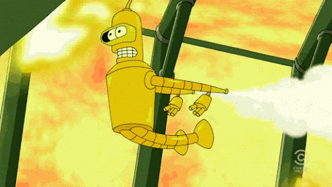

Lessons
Lesson 1
Lesson 2
Lesson 3
Lesson 4
About Us
Third Law of Motion:
“If body A exerts a force on body B (an “action”), then body B exerts a force on body A (a “reaction”). These two forces have the same magnitude but are opposite in direction. These two forces act on different bodies.” Or “For every action, there is an equal and opposite reaction.”

Also known as the Law of
Action and Reaction
, it represents a certain symmetry in nature: Forces always occur in pairs, and one body cannot exert a force on another without experiencing a force itself. We sometimes refer to this law loosely as “action-reaction,” where the force exerted is the action and the force experienced therefore is the reaction. Newton’s third law has practical uses in analyzing the origin of forces and understanding which forces are external to a system. There are two important features of Newton’s third law. First, the forces exerted (the action and reaction) are always equal in magnitude but opposite in direction. Second, these forces are acting on different bodies or systems: A’s force acts on B and B’s force acts on A. In other words, the two forces are distinct forces that do not act on the same body. Thus, they do not cancel each other.
Start the Quiz?